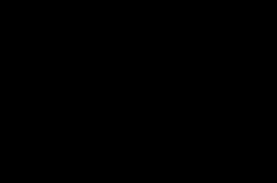

- 60 哪个 css 格式化工具是你的首选
- 59 CSS 选择器详解 12 个必知用法与最佳实践
- 58 动态视口单位之 dvh、svh、lvh
- 57 不规则造型按钮解决方案
- 56 不定宽文本溢出跑马灯效果完美解决方案
- 55 巧用 CSS 变量，实现动画函数复用
- 54 角向渐变的妙用
- 53 有趣的六芒星能力图动画
- 52 有意思的气泡 Loading 效果
- 51 CSS 原生支持的三角函数
- 50 有意思的网格下落加载效果
- 49 有意思的 Emoji 3D 表情切换效果
- 48 神奇的 3D 磨砂玻璃透视效果
- 47 抢先体验！超强大的 Anchor Positioning 锚点定位
- 46 CSS 也能实现碰撞检测
- 45 现代 CSS 解决方案 - 数学函数 Round
- 44 现代 CSS 解决方案 - 原生嵌套
- 43 神奇的背景，生化危机4日食 Loading 动画还原
- 42 当路径动画遇到滚动驱动
- 41 CSS 还原拉斯维加斯球数字动画
- 40 单标签下多色块随机文字随机颜色动画
- 39 CSS 也能实现 if 判断？实现动态高度下的不同样式展现
- 38 Flex 布局下居中溢出滚动截断问题
- 37 带圆角的虚线边框
- 36 现代 CSS 解决方案：文字颜色自动适配背景色
- 35 神奇的 3D 卡片反光闪烁动效
- 34 现代 CSS 解决方案：accent-color 强调色
- 33 巧用 has 和 drop-shadow 实现复杂布局效果
- 32 巧用 CSS + SVG 实现复杂线条光效动画
- 31 极具创意的鼠标交互动画
- 30 标准滚动条控制规范 scrollbar-color 和 scrollbar-width
- 29 类 ChatGpt 多行文本打字效果
- 28 神奇的卡片 Hover 效果与 Blur 的特性探究
- 27 渐变边框文字效果
- 26 巧妙使用多种方式实现单侧阴影
- 25 全尺寸的带圆角的渐变边框
- 24 开发中保证你用得到的 css 小技巧
- 23 您应该了解的 15 个有用的 CSS 属性
- 22 CSS 行元素的截断样式 box-decoration-break 属性
- 21 用 SASS 简化媒体查询
- 20 为什么你应该停止使用传统的 margin 和 padding 来设置 CSS 样式
- 19 sass 优化响应式布局代码
- 18 盘点 CSS 文本两端对齐的 N 种方式
- 17 如何修改滚动条的样式
- 16 CSS 模拟图片透明的棋盘背景
- 15 文本描边完美实现
- 14 你需要自定义 @property 而不是 CSS 变量的情况
- 13 从高度 0 过渡到自动高度
- 12 一些 css 语法解释
- 11 scss 日常用法
- 10 sass 指南
- 09 CSS 颜色设置透明度的新姿势
- 08 CSS 属性 appearance
- 07 CSS 动画性能优化
- 06 CSS 功能特性
- 05 CSS 中的 var() 函数
- 04 15 个你不知道的 CSS 属性
- 03 will-change
- 02 normalize.css 清除元素默认样式
- 01 纯 CSS 获取屏幕宽高
最近，在 Steam 玩一款老游戏（生化危机 4 重置版），其中，每当游戏转场的过程中，都有这么一个有趣的 Loading 动画：

整个效果有点类似于日食效果，中间一圈黑色，向外散发着太阳般的光芒。
本文，我们将尝试使用 CSS，还原这个效果。
整个效果做出来，类似于如下两个动画效果这样：

实现主体效果
其实，整个效果，去掉中间黑色的遮罩，是这个样子的：
所以，我们的目标就变成了，如何使用 CSS，实现上述这个图形效果。
角向渐变
到这里，思考一圈 CSS 中的各种属性，和这个图形能挂上钩的，几乎就只有角向渐变 conic-gradient 了。
我们可以利用多重角向渐变，试着画一个类似的图形 -- 从单个颜色到透明，再多次循环铺满 360° 的整个图形：
<div></div>
body {
background: #000;
}
div {
width: 200vw;
height: 200vh;
background: repeating-conic-gradient(
rgba(0, 136, 204, 0.77),
rgba(150, 157, 100, 0.72) 2%,
rgba(230, 247, 200, 0.82) 3%,
transparent 4%,
transparent 5%
);
}
我们随机设置了 conic-gradient() 中的颜色 A 到颜色 B 到颜色 C到透明的变化，可以得到这么一张图形：
注意，对于上面的颜色没有任何要求，随机设置都可以。
我们可以让这个图形旋转起来，简单加上一个旋转动画：
div {
animation: rotate 2s ease-in-out infinite;
}
@keyframes rotate {
to {
transform: rotate(1turn);
}
}
效果如下：

我们仔细观察一下，我们要的最终效果，其实要求边缘是毛刺状，而不是连续的图像：
这一步要怎么实现呢？其实也非常简单，我们只需要在原图像上，叠加一层从图像主色到黑色的径向渐变即可。
我们可以借助伪元素实现这个叠加遮罩：
div::before {
content: "";
position: absolute;
inset: 0;
background: radial-gradient(
rgba(150, 157, 100, 0.32),
rgba(0, 0, 0, 1) 45vmin,
rgba(0, 0, 0, 1)
);
}
这里我们实现了这么一个渐变：
radial-gradient(rgba(150, 157, 100, 0.32), rgba(0, 0, 0, 1) 45vmin, rgba(0, 0, 0, 1))：其核心就是实现了从某一个实体颜色（选取一个上面角向渐变图形用到的主要颜色）到黑色的一个径向渐变效果
这样，我们就将边缘改造的不那么突兀了！
效果如下：

设置多层背景
基于上述的原理及技巧，我们重新构思一下整个动画，上面只有一层角向背景的背景在运动。
那么，如果我们设置多层背景，并且，设置他们正向、反向一起运动呢？
我们来实现一个 4 层角向渐变背景的动画效果，并且使用最终我们想要的黄色为主题色，：
<div class="g-container">
<div class="g-circle g-circle1"></div>
<div class="g-circle g-circle2"></div>
<div class="g-circle g-circle3"></div>
<div class="g-circle g-circle4"></div>
</div>
完整的 CSS 代码如下：
body {
width: 100%;
height: 100%;
background: #000;
}
.g-container {
position: absolute;
width: 80vmax;
height: 80vmax;
top: 50%;
left: 50%;
transform: translate(-50%, -50%);
.g-circle {
position: absolute;
inset: 0;
border-radius: 50%;
}
.g-circle1 {
background: repeating-conic-gradient(
from 0deg at 50% 50%,
transparent 0%,
rgba(255, 230, 8, 0.69) 1%,
transparent 6%
);
animation: 13s linear rotate infinite reverse;
}
.g-circle2 {
background: repeating-conic-gradient(
from 19deg at 50% 50%,
transparent 0%,
rgba(250, 240, 20, 0.78) 1.2%,
rgba(250, 240, 20, 0.78),
transparent 4.8%,
transparent 7.6%
);
animation: 9s linear -2s rotate infinite;
}
.g-circle3 {
background: repeating-conic-gradient(
from 37deg at 50% 50%,
transparent 0%,
rgba(250, 240, 20, 0.78) 4%,
transparent 7.9%,
transparent 12%
);
animation: 17s linear rotate infinite reverse;
}
.g-circle4 {
background: repeating-conic-gradient(
from 103deg at 50% 50%,
transparent 0%,
rgba(250, 240, 20, 0.5) 5%,
rgba(250, 240, 20, 0.27) 7%,
transparent 12%
);
animation: 7s linear rotate infinite;
}
}
@keyframes rotate {
from {
transform: rotate(0deg);
}
to {
transform: rotate(359deg);
}
}
上面的代码，做了几件核心事情：
- 4 层背景重叠在一起
- 4 层背景设置不同的重复角向渐变图案
repeating-conic-gradient() - 4 层背景两个顺时针旋转、两个逆时针旋转
- 动画的参数各不相同
这样，我们能得到这么一个效果：

此时，我们再在上述图形的基础上，叠加上一层遮罩 mask，将图案的边缘黑化：
<div class="g-container">
<div class="g-circle g-circle1"></div>
<div class="g-circle g-circle2"></div>
<div class="g-circle g-circle3"></div>
<div class="g-circle g-circle4"></div>
+
<div class="g-circle g-mask"></div>
</div>
.g-container .g-mask {
position: absolute;
inset: -200px;
background: radial-gradient(
rgba(250, 240, 20, 0.2) 0,
rgba(0, 0, 0, 0.8) calc(40vmax - 15vmax),
#000 calc(40vmax - 5vmax),
#000 100%
);
}
这里是一个比原容器稍微大的新容器（注意 inset: 200px），再设置从中心想外的径向渐变，最外层颜色为黑色。
这样，我们就能得到我们想要的效果了：

到这里，完整的代码，你可以戳这里：CodePen Demo -- Conic-gradient Pic
使用混合模式
当然，上述其实只是一种实现该图形动画的方式。
我们还可以借助混合模式，得到类似的效果。
这一次，我们将借助 SASS 的随机函数，随机生成不同的角向渐变背景，大致的代码如下：
<div></div>
@function randomNum($max, $min: 0, $u: 1) {
@return ($min + random($max)) * $u;
}
@function randomConicGradient() {
$n: 16 + random(16);
$list: ();
@for $i from 0 to $n {
$list: $list, rgba(hsl(100, randomNum(250, 5, 10%), randomNum(1, 1, 1%)), randomNum(100, 0, 0.01));
}
@return conic-gradient($list, nth($list, 1));
}
body {
overflow: hidden;
}
div {
width: 100vw;
height: 100vh;
margin: 0;
background: radial-gradient(
hsl(9, randomNum(100, 75, 1%), randomNum(100, 75%, 1%)),
black
);
&:before,
&:after {
position: absolute;
top: 50%;
left: 50%;
margin: -100vmax;
width: 200vmax;
height: 200vmax;
opacity: 0.5;
animation: rotate randomNum(100, 25, 0.1s) ease-in-out infinite;
content: "";
}
&:before {
background: randomConicGradient();
}
&:after {
background: randomConicGradient();
animation-duration: randomNum(100, 25, 0.1s);
animation-direction: reverse;
}
}
@keyframes rotate {
to {
transform: rotate(1turn);
}
}
上述的代码核心做了 3 件事：
- 元素本身设置了一个简单的从随机颜色到黑色的径向渐变
- 元素的两个伪元素借助 SASS 随机生成不同的角向渐变背景
- 两个伪元素做反向的旋转动画
这样，我们可以得到这么一种随机效果：
这里可能大家光看代码还是会有些费劲，我给大家再拆解一下，上面的图形，大致是由下述方式叠加而来（由于颜色都是随机生成的，所以更多的看每个结构实现了什么样的图形）：
嘿，有点意思，不过别急，此时，我们再给两个伪元素，添加上一个混合模式 mix-blend-mode: overlay：
div {
// ...
&:before,
&:after {
mix-blend-mode: overlay;
}
}
这样，整个效果就变成了：

由于，颜色是随机的，刷新页面或者简单改变一些颜色参数，得到的效果就会很不一样，也有可能是这样的：

或者这样的：
借助混合模式，我们实现了更为酷炫的效果，上述的 DEMO，完整的代码在这里：CodePen Demo -- Animation conic-gradient
还原题图效果
好，到这里，我们再回归最开始我们希望实现的效果：
有了上面的铺垫，再看这个效果就没那么复杂了，本质就是在我们上述实现的图形中间，镂空一个黑色区域。
首先，我们借助上述铺垫的内容，实现这么一个图形：

接着，我们在内部，通过 mask，进行一个径向渐变的镂空即可，加上这么一句简单的代码：
div {
mask: radial-gradient(transparent, transparent 55%, #000 56%, #000);
}
需要结合实现 background 的参数进行调试。
这样，我们就成功的实现一个类似的 Loading 图形：

完整的代码，你可以戳这里：CodePen Demo -- Animation conic-gradient & Mask
我们再看一个由 CodePen 上由 Yoav Kadosh 实现的另外一个原理类似的有意思的效果：

经由本文介绍的技巧，我们还可以演化出许多有意思的效果，读者朋友可以自行探索！CSS 还有非常有意思的。